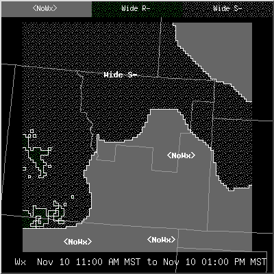

NOTE: ifpIMAGE by default uses configuration files that are defined for SITE. If you create a configuration file at USER level, then run the ifpIMAGE program, the ifpIMAGE probably will not generate any images. This is caused by storing the configuration file under USER and not SITE, and the ifpIMAGE program is looking for your configuration file in SITE. You can override this behavior using the -u switch to ifpIMAGE.
Creation of the ifpIMAGE configuration file is done through the GFE main menu item: GFE->Define Config and ifpIMAGE Files menu entry. Be sure to create/modify these files at SITE level to ensure that the custom configuration files end up in the SITE directory.
| Option | Optional | Meaning |
| -h hostname | NO (see note) | Name of the host on which the server is running |
| -p portnumber | NO (see note) | Port number for the server |
| -c configName | NO | Configuration filename |
| -u username | YES | UserName, defaults to "SITE" |
| -o outputDirName | NO (see note) | Name of output directory |
| -b baseTime | YES | Base time, used in determining filenames. Basetime is in the yyyymmdd_hhmm format. See the filename naming section of this document. |
| -s startTime | YES | Specifies the starting time range from which to generate PNG images. Format is in the yyyymmdd_hhmm format. Only images that have a time equal to or after this specified time will be generated. |
| -e endTime | YES | Specifies the ending time range from which to generate PNG images. Format is in the yyyymmdd_hhmm format. Only images that have a time before this specified time will be generated. |
| -t userDefinedTimeRange | YES | Specifies a user defined time range to be used to define the range of times from which images should be generated. Example is: -t "Day 3". This will generate images for any grids that overlap the definition of "Day 3". Note that these definitions change at midnight local time or 0000z. |
Note: When running ifpIMAGE in a normally configured system, the -h and -p switches are not needed since they will be brought in from your configured installation. The -o switch defaults to your /awips2/cave/etc/gfe/products/IMAGE directory. If you want to connect to a different server than the configured EDEX, then the -h and -p switches are needed. If the default destination isn't correct for your purpose, then you will need to specify an -o switch. If environment variables ${CDSHOST} or ${CDSPORT} are defined, then the default server and port will be determined from the environment variables, unless overridden with the user specified -h and -p switches.
NOTE: ifpIMAGE by default uses
configuration
files that are defined at SITE level. If you create a configuration file at USER level,
then run the
ifpIMAGE program, the ifpIMAGE probably will not generate any
images.
This is caused by storing the configuration file at USER level and not
SITE, and the ifpIMAGE program is looking for your configuration file in
SITE.
You can override this behavior using the -u switch to ifpIMAGE.
Here are the steps to take:
1. Decide which weather elements you want overlaid on your PNG imagery.Note that Topography is available for the png image by using the Png_parms entry and specifying "Topo".
2. Create a GFE configuration file that will be used to generate PNG imagery. Edit the gfe configuration file to define the Png_parms entry.
Example ifpIMAGE configuration file
The modifications to the GFE configuration file to make this an image are:
Png_image = 'T'
Png_parms has been defined to contain: 'T_SFC:_Official -1'.
If you wanted to make a set of temperature images, dew point images, and wind images, you will need three different GFE configuration files.
Example ifpIMAGE configuration file
A smooth image can be produced via a configuration file change for a scalar or vector weather element only:
Png_smoothImage =
1 (smoothing enabled0
Png_smoothImage
= 0 (smoothing disabled)
Note that if you are filtering
the displayed data by site identifier or site plus weather element name
(e.g., BOU_mask = "CWA, BOU_T_mask = "BOU", T_mask = "BOU", or mask = "BOU"), your smoothed
image
will also be smooth, clipped. Click
here for just smooth, clipping options.
ipfIMAGE-noSmooth.png
ifpIMAGE-Smooth.png
Example ifpIMAGE configuration file
To produce a smooth, clipped area, as opposed to just providing a display filter or masking, use:
Png_smoothClip = 0
The following rules apply if both Png_smoothImage and Png_smoothClip
are used.
|
|
|
|
|
|
|
|
|
No data smoothing, no smooth clipping |
|
|
|
|
No data smoothing, clipped to the pixel level of the display filter (mask) indicated, uses the nearest "grid box" for the data |
|
|
|
|
Data smoothing, clipped to the pixel level of the display filter (mask) indicated, uses bi-linear interpolation for the data values |
|
|
|
|
Data smoothing, clipped to the pixel level of the display filter (mask) indicated, uses bi-linear interpolation for the data values |
|
|
|
|
No data smoothing, no smooth clipping |
|
|
|
|
No data smoothing, clipped to the pixel level of the display filter (mask) indicated, uses the nearest "grid box" for the data |
|
|
|
|
No data smoothing, no smooth clipping |
|
|
|
|
No data smoothing, clipped to the pixel level of the display filter (mask) indicated, uses the nearest "grid box" for the data |

|
|
|
|
Example ifpIMAGE configuration
file
The following pictures illustrate the effect of denoting Sky to be an image or a graphic.
The modifications to the GFE configuration file to make alternate between a graphic and image are a single line:
Png_image = 'Sky'
If you want it a graphic, be sure not to include the line Png_image.
Example ifpIMAGE configuration file
The type of graphic can be controlled through the visual type fields in the gfe configuration file.
Example ifpIMAGE configuration file
The changes made to the configuration file consisted of modifying (or adding) a line that specifies that T (temperature) for the spatial editor image should include contours:
from: T_spatialImageType = [ "Image" ]
to: T_spatialImageType = [ "Image", "Contour" ]
Example ifpIMAGE configuration file
The user can specify:
1. The color table name to be used for an individual weather element (e.g., Linear). If not specified, then the color table is the default smooth rainbow spectrum. You can change the characteristics of this default rainbow spectrum.A new color spectrum may be created in the GFE using the Color Table Editor Dialog , saved with a new filename and configured in ifpIMAGE.
2. The color table range mapping (e.g., minimum and maximum values). By default, the mapping is performed from the minimum possible value to the maximum possible value as defined in serverConfig.py.
3. Whether the color table mapping should be linear or logarithmic. The logarithmic scaling factor is specified in the gfe configuration file.
Example ifpIMAGE configuration file
The changes made to the configuration file consisted of modifying (or adding) a line that specifies T's (temperature) color table:
from: T_defaultColorTable="colorTable1"
to: T_defaultColorTable="tColorTable"
The changes made to the configuration file consisted of modifying (or adding) two lines that specifies T's (temperature) color table value mapping:
to: T_maxColorTableValue = 50.0
to: T_minColorTableValue = 0.0
The changes made to the configuration file consisted of modifying (or adding) a line that specifies T's (temperature) color table should be mapped logrithmetically:
to: T_LogFactor = 0.01
The changes made to the configuration file consisted of modifying (or adding) a line that specifies MaxT's (maximum temperature) color table should be mapped with the "fit to data" algorithm:
to: MaxT_fitToDataColorTable = "All Grids"
To change the algorithm to look at all grids, but only use data values contained in your CWA (e.g., CYS), then the following two entries would be needed. Note that the "... over Area" algorithm is generally only used when masking data.
to:
MaxT_fitToDataColorTable = "All Grids over Area"
Png_fitToDataArea = "CYS"
To change the Maximum Temperature's color bar labels to 32, 40, 50, 60, the following entry would be made in the gfe configuration file:
add:
MaxT_ColorBarLabels = [32.0, 40.0, 50.0, 60.0]
The following illustrates making the same data as a thumbnail
(100x100)
and large (600x600).
The changes made to the configuration file consisted of modifying the lines that specifies T's (temperature) color table should be mapped logrithmetically:
for the small image: Png_height = 100
for the large image: Png_height = 600
Example ifpIMAGE configuration file
The changes made to the configuration file consisted of modifying (or adding) several lines to adjust the size of the space around the grid:
from:
OfficeDomain_expandLeft = 10
OfficeDomain_expandRight = 10
OfficeDomain_expandTop = 10
OfficeDomain_expandBottom = 10
to:
OfficeDomain_expandLeft = 5
OfficeDomain_expandRight = 20
OfficeDomain_expandTop = 10
OfficeDomain_expandBottom = 30
Example ifpIMAGE configuration file
If the samples are too small or too large, changes can be made through the sample font entry in the gfe configuration file. The illustration below shows samples for Temperature and Wind. The white entry matches the image, Wind; the green entries match the Temperature.
The procedure for adding samples to the PNG image is to create a sample set in the GFE and save it. Then modify the PNG configuration file to identify that sample set:
DefaultSamples = ['pngSamples']
The format of the samples for vector data may also be changed to one of the following formats:
The offset from the sample anchor point to the sample values may also be set. Refer to Sample Label Offsets in the gfe configuration documentation.
By default, the values displayed at each sample point comprise values from all of the visual weather elements. For example, if T, Td, and Wind are visible, then each sample will display the values from T, Td, and Wind. You can change this behavior through the Limiting Samples to Specific Weather Elements entry in the gfe configuration file.
You may also change the color associated with a sample. The default is that the sample color will match the graphic color for that weather element. Use the parmName_Sample_color in the gfe configuration file to explictly set a color for the sample. For example, to change the sample color for Temperature (T) to green, do the following:
add:
T_Sample_color = "green"
Example ifpIMAGE configuration file
The user can choose to mask all weather elements the same on the image, or choose to mask just certain ones. Refer the the mask field definition in gfe configuration file for details.
The changes made to the configuration file consisted of modifying (or adding) a line that specifies the clipping mask for the site (BOU in this case). (There are alternative forms available as well.) The edit area is "BOU":
BOU_mask = "BOU"
Example ifpIMAGE configuration file
Note that when the user specifies a mask, that the ifpIMAGE display will automatically be zoomed in to show just that area. This feature may be disabled through the use of the Png_wholeDomain configuration item.
Smooth clipping may
be applied when using a mask.
The changes made to the configuration file consisted of modifying the lines that the default map backgrounds:
from: MapBackgrounds_default = ['States', 'CWA']
to: MapBackgrounds_default = ['States', 'Counties']
Example ifpIMAGE configuration file
The changes made to the configuration file consisted of modifying or adding the following lines:
States_graphicColor = 'red'
States_lineWidth = 3
CWA_graphicColor = 'green'
CWA_linePattern = "DOTTED"
Example ifpIMAGE configuration file
The following changes were made to the configuration file:
Contour_font = 4
T_graphicColor = 'blue'
Wind_graphicColor = 'red'
Wind_fontOffset = 2
Wind_density = 20
T_density = -2
Example ifpIMAGE configuration
file
You can change this behavior and force ifpIMAGE to generate images at specific time intervals. These time intervals are specified in units of hours and will cover all grids from the beginning to the end of the database that match the hour interval. Note that you may also want to specify Png_snapshotTime in order for the legends to indicate the interval time, rather than the grid valid time.
For example, specifying an interval of 6 hours will always generate images for 00z, 06z, 12z, and 18z. The following changes would be made to the configuration file for an interval of 6 hours:
Png_interval = 6
To generate images that begin at a starting time other than 00z, you can specify an interval offset using a configuration option. For example, specifying an interval offset of 1 and an interval of 6 (i.e., Png_interval = 6) will generate images at 01z, 07z, 13z and 19z. The default for Png_intervalOffset is 0.
Png_intervalOffset = 1
Example ifpIMAGE configuration file
Refer to the gfe
configuration
file documentation for more details on the interval item.

The configuration file was modified to change the mapping from patterns to coverages, and from colors to weather types. The entries that were changed are highlighted for clarity.
from:
WeatherCoverage_names = ["Iso", "WSct", "Sct", "Num", "Wide",
"Ocnl",
"SChc",
"Chc", "Lkly", "Def", "Patchy", "<NoCov>"]
WeatherCoverage_fillPatterns = ["OCNL", "WIDE_SCATTERED",
"SCATTERED", "LKLY", "WIDE", "OCNL",
"WIDE_SCATTERED", "SCATTERED", "LKLY",
"WIDE", "SCATTERED", "WHOLE"]
WeatherType_names = ["<NoWx>", "T", "A", "R", "RW", "L",
"ZR",
"ZL",
"S", "SW", "IP", "F", "H", "BS", "K", "BD",
"SA", "LC", "FR", "AT", "TRW"]
WeatherType_colors = ["brown", "red3", "DeepPink", "ForestGreen",
"ForestGreen", "CadetBlue1", "darkorange1",
"goldenrod1", "gray70", "Grey65", "plum1",
"khaki4", "Gray75", "snow", "grey30", "Brown",
"blue1", "coral1", "pale turquoise", "DeepPink",
"red3"]
to:
WeatherCoverage_names = ["Iso", "WSct", "Sct", "Num", "Wide",
"Ocnl",
"SChc",
"Chc", "Lkly", "Def", "Patchy", "<NoCov>"]
WeatherCoverage_fillPatterns = ["OCNL", "WIDE_SCATTERED",
"SCATTERED", "LKLY", "WHOLE", "OCNL",
"WIDE_SCATTERED", "SCATTERED", "LKLY",
"WIDE", "SCATTERED", "WHOLE"]
WeatherType_names = ["<NoWx>", "T", "A", "R", "RW", "L",
"ZR",
"ZL",
"S", "SW", "IP", "F", "H", "BS", "K", "BD",
"SA", "LC", "FR", "AT", "TRW"]
WeatherType_colors = ["brown", "red3", "DeepPink", "Green",
"ForestGreen", "CadetBlue1", "darkorange1",
"goldenrod1", "blue", "Grey65", "plum1",
"khaki4", "Gray75", "snow", "grey30", "Brown",
"blue1", "coral1", "pale turquoise", "DeepPink",
"red3"]
Example ifpIMAGE configuration file
| Pretty Wx String (plotted by default) | Desired Sample Label |
| Sct RW- | Rain Showers |
| Sct SW- | Snow Showers |
| Lkly S- | Snow |
| Wide S- | Snow |
| <NoWx> | (blank) |
then your entries in the configuration file would contain:
AltWxSampleLabels_prettyWx = ['Sct RW-', 'Sct SW-', 'Lkly S-',
'Wide
S-', '<NoWx>']
AltWxSampleLabels_label = ['Rain Showers', 'Rain Showers', 'Snow',
'Snow', '']
Png_omitColorBar = 1
You can control the label
sizes on the color bar.
The changes made to the configuration file consisted of modifying (or adding) a line that specifies T's (temperature) color table:
from: Png_legend = 1
to: Png_legend = 0
Example ifpIMAGE configuration file
The changes made to the configuration file consisted of modifying (or adding) a line that specifies T's (temperature) color table:
from: Png_localTime = 0
to: Png_localTime = 1
Example ifpIMAGE configuration
file
The changes made to the configuration file consisted of modifying (or adding) a line that enables this option:
from: Png_descriptiveWeName = "SHORT"
to: Png_descriptiveWeName = "LONG"
Example ifpIMAGE configuration file
You can also set Png_descriptiveWeName to "ALT" which lets you define your own weather element string. If you use "ALT", then you use the Png_wxelem_AltName to define the string you want to use, where wxelem is the name of the weather element. For example, to change the "Maximum Temperature" string to "High Temps", you would enter the following two strings:
Png_descriptiveWeName = "ALT"
Png_MaxT_AltName = "High Temps"
The order of the legend is always the weather element name, duration, start time, and ending time. Any of the duration, start time and ending time may be omitted.
from:
Png_legendFormat_LT_dur = ""
Png_legendFormat_LT_start = "%b %d %I:%M %p %Z to "
Png_legendFormat_LT_end = "%b %d %I:%M %p %Z"
to:
Png_legendFormat_LT_dur = "%H hours "
Png_legendFormat_LT_start = " "
Png_legendFormat_LT_end = "ending %a %b %d, %Y %I:%M %p"
The units can be placed on the legend by including the special phrase "[UNITS]" in one of the legend format strings. For example, if you wanted the units to appear right before the duration in the above example, you would define the Png_legendFormat_LT_dur string to be:
Png_legendFormat_LT_dur = "([UNITS]) %H hours "
Example ifpIMAGE configuration
file
To indicate a snapshot time instead of the valid time of the grid, use the Png_snapshotTime option.
add:
Png_snapshotTime = 1
The default format of the snapshot Zulu time is "%b%d%H%MZ". To change this format
add:
Png_legendFormat_Zulu_snapshot = "%b%d%H%MZ"
The default format of the snapshot itme if the Png_snapshotTime = 1 and Png_localTime = 1 is "%d %b %I:%M %p% Z" . To change this format
add:
Png_legendFormat_LT_snapshot = "%I:%M %p %Z" (for example)
Refer to the gfe configuration documentation for details on how formats can be changed.
Example ifpIMAGE configuration
file
add:
Png_legendLanguage = "spanish"
add:
T_Legend_color = "red"
from:
bgColor = 'black'
ImageLegend_color = "white"
to:
bgColor = 'white'
ImageLegend_color = "blue"
Example ifpIMAGE configuration
file
To prefix all of the filenames with "T_Official_", use the following entry in the configuration file:
Png_filenamePrefix = 'T_Official_'
The result will be that all of the generated filenames will be in the form of T_Official_yyyymmdd_hhmm.png.
Example ifpIMAGE configuration file
When the -b switch is given to ifpIMAGE, the date string is changed to this format:
basetime_Fproj
where basetime is that specified on the command line with the -b switch, and proj is calculated as the number of hours offset from the basetime for the valid time of the image.
For example, if the basetime is specified as 20010313_1200, and the valid time of the image is 20010313_2100, then the png filename (assuming no prefix) will be:
20010313_1200_F9.png
The Png_baseTimeFormat entry also allows you to change the formatting of the date string. This works with or without the -b command line switch. The base time format is in the identical format to the legend formatting strings. Refer to the gfe configuration documentation for the available options. For example, if you wanted the output filenames to only contain the forecast projection time, then you would run the ifpIMAGE with the -b switch and specifying the base time, and you would use the following syntax in the gfe configuration file:
Png_baseTimeFormat = ''
If you wanted to include just the day of the week, then followed by the projection time, then use the -b switch, specify the base time, and use the following syntax in the gfe configuration file:
Png_baseTimeFormat = "%a_"
which would produce filenames such as Tue_18.png.
If you don't specify the -b switch, then the base time formatting is for the valid time of the grid. A format such as:
Png_baseTimeFormat = "%a_%H"
would result in filenames such as: Mon_18.png, Mon_21.png, Tue_00.png, Tue_03.png.
If an IMAGE is displayed as both an IMAGE and GRAPHIC (such as temperature image with contours), the info file will have two entries for that grid -- one IMAGE and one GRAPHIC.
The form of the weather element identifier has the following
attributes:
| Name | Description | Example |
| Weather Element Name | name of the weather element | T |
| Site identifier | site identifier for the database | BOU |
| Format | format of the weather element, always GRID | GRID |
| Optional database type | Optional database type for the database | '' |
| Model | Model Name | Fcst |
| ModelTime | Valid time of the model, in form of yyyymmdd_hhmm | 20010301_1200 |
Each of the sections are separated by an underscore character, except for the weather element name, which is always followed by a colon (:).
The above was accomplished by the following two statements in the configuration file:
to:
Png_logo = 1
Png_logoString = "NWS Timbuktoo"
Example ifpIMAGE configuration file